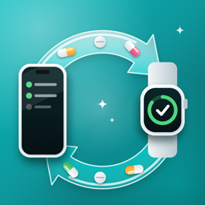

プライバシーポリシー
おくすりタイム - 飲み忘れ防止（iPhone・Apple Watch）
はじめに
「おくすりタイム」（以下「本アプリ」）は、お薬の飲み忘れを防ぐためのアプリです。本アプリは、利用者の個人情報を開発者のサーバーへ送ったり、集めたりしません。
本アプリが扱う情報
- 登録したお薬（名前・飲む量・時間・残りの数など）
- 服用の記録（飲んだ日時）
- 次回受診日、服用薬一覧に入力したお名前・メモ
- 文字の大きさ・色などの設定
これらの情報は、お使いの iPhone と、ペアリングした Apple Watch の中だけに保存されます。iPhone と Apple Watch の間では、Apple の仕組み（WatchConnectivity）を使って直接やり取りします。
集めない情報
- アカウント登録・ログインはありません
- 広告、利用状況の分析（アクセス解析）、トラッキングは行いません
- 位置情報、連絡先、写真、ヘルスケアのデータは使いません
インターネットの利用
「患者向医薬品ガイド」を開くときだけ、医薬品のコード（公開されている薬の番号）をもとに独立行政法人 医薬品医療機器総合機構（PMDA）の公開ページを読み込みます。このとき送られるのは医薬品のコードだけで、利用者を特定できる情報は送りません。PMDA のページの取り扱いは、PMDA のサイトをご確認ください。
通知・アラーム
服用時刻のお知らせは、端末の中で予約する通知・アラームで行います。お知らせの内容が外部へ送られることはありません。
情報の削除
アプリ内の「設定 → データ」から削除できます。また、本アプリを削除すると、端末に保存された情報もすべて削除されます。
このポリシーの変更
内容を変更する場合は、このページでお知らせします。
制定日：2026年11月17日
お問い合わせ
サポートページをご覧ください。